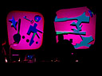
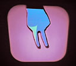

|
THE MANUAL INPUT SESSIONS | ||
| HAND-FORMS IN HYBRID LIGHT | ||
| The Manual Input Sessions is a series of audiovisual vignettes which probe the expressive possibilities of hand gestures and finger movements. Our concert is performed on a combination of custom interactive software, analog overhead projectors and digital computer video projectors. The analog and digital projectors are aligned such that their projections overlap, resulting in an unusual quality of hybridized, dynamic light. During the performance, a computer vision system analyses the sihouettes of the performers? hands as they scribble on transparencies, and move across the glass tops of the overhead projectors. The hand gestures and transparency drawings are then analysed by our custom software. In response, our software generates synthetic graphics and sounds that are tightly coupled to the forms and movements of the performers' actions. The synthetic responses are co-projected with the organic, analog shadows, resulting in an almost magical form of augmented-reality shadow play. Technical Paper: | ||
| BIOGRAPHIES | ||
| Golan Levin (http://www.flong.com) is an artist, engineer and composer interested in developing artifacts and events which explore supple new modes of interactive expression. His work focuses on the design of systems for the creation, manipulation and performance of simultaneous image and sound, as part of a more general inquiry into non-verbal communications protocols in cybernetic systems. He is known for the conception and creation of Dialtones (2001), a concert whose sounds are wholly performed through the carefully choreographed dialing and ringing of the audience's own mobile phones, and for The Secret Lives of Numbers (2002), an interactive online data visualization featured in the 2004 Whitney Biennial. Levin is Assistant Professor of Electronic Art at Carnegie Mellon University, Pittsburgh. Zachary Lieberman (http://www.thesystemis.com) is an artist, engineer and educator whose work explores the creative and human uses of technology. He produces installations, on-line works and concerts concerned with the themes of kinetic and gestural performance, interactive imaging and sound synthesis. Lieberman lives and works in New York City, where he teaches courses in audiovisual synthesis and creative image processing at Parsons School of Design. Most recently, Lieberman and Levin have premiered several works exploring visual treatments of real-time speech analysis, including RE:MARK (2002), an interactive installation, and Messa di Voce (2003), an interactive-media performance. | ||
| CONTACT | ||
| ||
| All texts, sounds, images and videos contained herein are (C) 2004 Golan Levin and Zach Lieberman, and may not be reproduced without permission. Last updated: 21 June 2004. Site keywords: new media performance, interactive performance, audiovisual performance, augmented reality, computer vision, sound synthesis, real-time, interactive art, software art, electronic art, performance media, performance technology, dynamic abstraction, live cinema, overhead projection, hand shadows. |
| Photographs from Performing Technology from the 2004 Whitney Biennial: The Kitchen, New York City, April 30 and May 1, 2004 | |
|  | |
 | |
| VIDEO | |
 Introduction (11.5 Mb) | "Negdrop" Module (11.1 Mb) |
|  "Rotuni" Module (12.5Mb) | "Innerstamp" Module (13.5Mb) |
| Performance video, The Kitchen, NYC | |